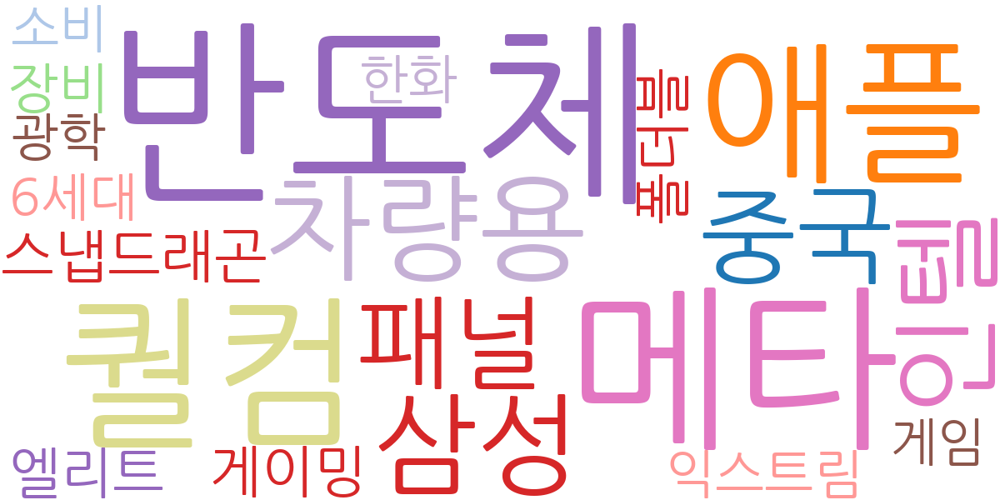
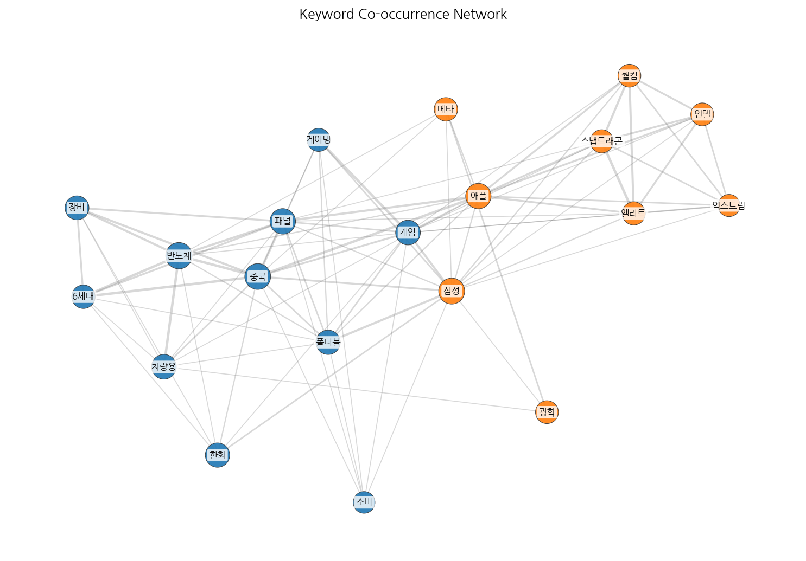
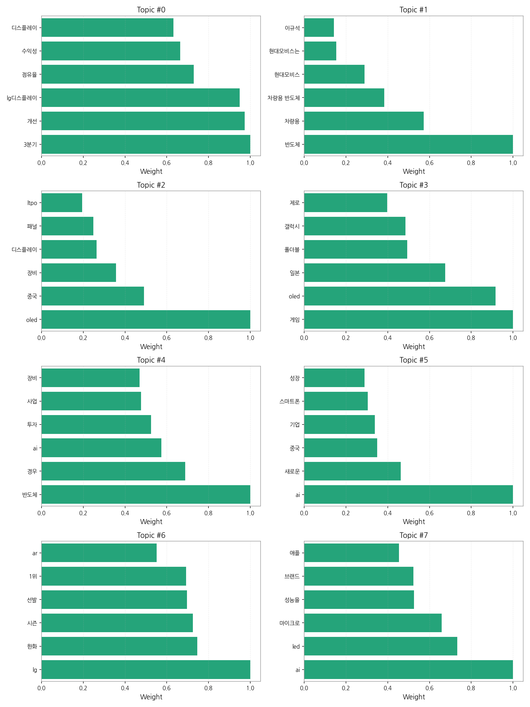
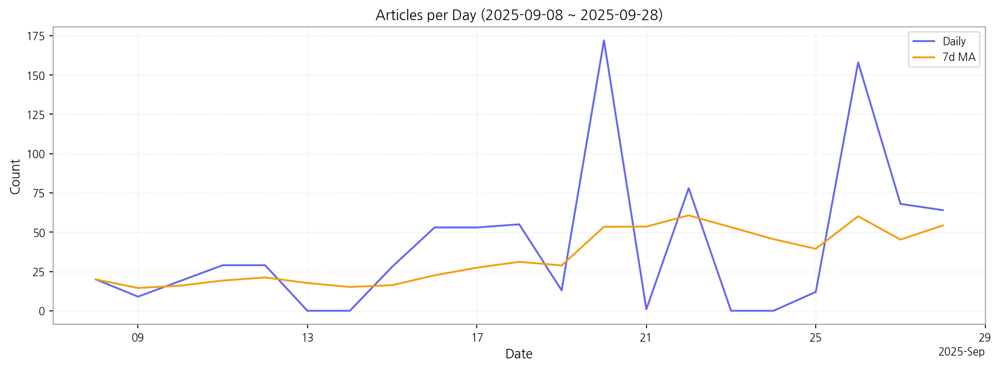

1. 핵심 맥락:
2. 최근 변화/스파이크:
3. 실무 인사이트:

| Rank | Keyword | Score |
|---|---|---|
| 1 | 반도체 | 0.661 |
| 2 | 메타 | 0.528 |
| 3 | 퀄컴 | 0.440 |
| 4 | 애플 | 0.387 |
| 5 | 차량용 | 0.385 |
| 6 | 삼성 | 0.359 |
| 7 | 인텔 | 0.358 |
| 8 | 중국 | 0.311 |
| 9 | 패널 | 0.297 |
| 10 | 스냅드래곤 | 0.295 |
| 11 | 게이밍 | 0.289 |
| 12 | 폴더블 | 0.285 |
| 13 | 엘리트 | 0.275 |
| 14 | 장비 | 0.270 |
| 15 | 한화 | 0.251 |



1. 핵심 맥락:
2. 최근 변화/스파이크:
3. 실무 인사이트:
| Idea | Target | Value Prop | Score |
|---|---|---|---|
| 초저지연 XR 글래스용 Micro-OLED 솔루션 | 북미 빅테크 기업 (Meta, Apple, Google) | 초저지연, 고해상도 Micro-OLED 기술을 통해 몰입감 극대화. 경쟁사 대비 높은 휘도와 명암비를 제공하며, 경량화 및 저전력 설계로 사용자 편의성 증대. | 4.50 |
| AI 기반 디스플레이 공정 자동화 및 수율 예측 솔루션 | 디스플레이 제조사 (LG Display, BOE, CSOT) | AI 기반 실시간 공정 데이터 분석 및 예측 모델을 통해 불량 발생 가능성을 사전에 감지하고 수율을 극대화. 경쟁사 대비 높은 정확도와 빠른 분석 속도를 제공. | 4.30 |
| AI 기반 차량용 HUD 증강현실 솔루션 | 글로벌 완성차 OEM (Tier 1 부품사 협력) | AI 기반 실시간 객체 인식 및 예측 기술을 통해 운전자에게 최적화된 증강현실 정보를 제공하여 안전 운전 및 편의성 극대화. 경쟁사 대비 넓은 시야각과 높은 해상도를 제공하는 MicroLED 기반 HUD. | 4.20 |
| 퀀텀닷 기반 색변환층을 활용한 MicroLED 디스플레이 | 프리미엄 TV 제조사 (Samsung, LG) | 퀀텀닷 기반 색변환층을 통해 색 균일성을 개선하고 생산 비용을 절감. 경쟁사 대비 넓은 색 영역과 높은 색 재현율을 제공. | 4.00 |
| 폴더블 IT 기기용 UTG (Ultra-Thin Glass) 일체형 OLED 패널 | 글로벌 IT 기기 제조사 (Samsung, Lenovo, Dell) | UTG 일체형 OLED 패널을 통해 내구성을 획기적으로 개선하고 주름 현상을 최소화. 경쟁사 대비 얇고 가벼운 디자인으로 휴대성 증대. | 3.80 |